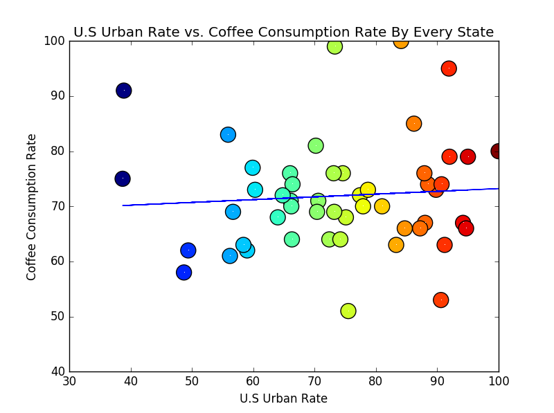
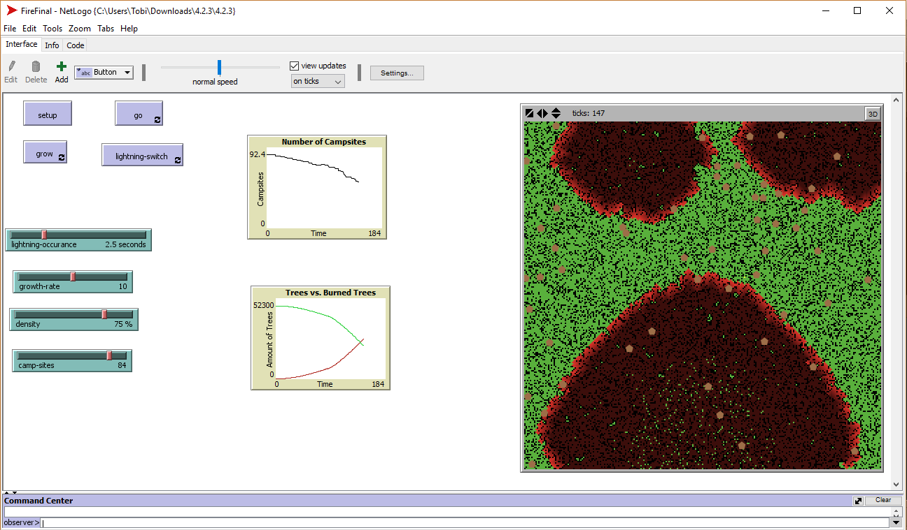

Project Portfolio
Scratch Project

Scratch is a online game designed to help users understand the basic thinking patterns of a programmer by giving the users scripts to move certain objects around and place reactors to certain events. The site lets you use your own custom background and character, and is shareable to the whole world to view.
Activity 1.1.7 Scratch Game

In this activity, I got together with my partner Eric Weng, and created a racing simulation game by using Scratch. We incorperated elements such as practicing "Driver and Navigator Coding" and using a SCRUM product backlog sheet.
1.3.3B Python Interactive English Project


For our activity in 1.3.3B, me and my partner Tan Tran banded together to make an epic coding team! We used my English narrative essay, and turned it into an interactive story using Python 3 on repl.it. We also used flowcharts to help document our ideas and what our code should turn out to be.
1.3.10 Python: First App Project

For this project, my partner and I - Nathan Sueki - created a mini-game running off of Python 3 code. In this mini-game, we created a dice game, where you roll a dice and move however many steps forward (or backwards) and face against other players. Whoever reaches 100 steps wins!
3.2.7 Data Project
In 3.2.7 my partner Nathan Tran and gathered data on coffee intrest rate and urban population rate in the U.S to answer the question proposed by our "clients"(other classmates) of "How is coffee consumption affected by residential area?" Our files can be downloaded here.
4.2.3 AI Project
In the AI Project for 4.2.3, my partner Kaylee Hernandez and I worked together to create a wildfire simulation using NetLogos, an artificial intelligence program using the Logo language. We used the existing wildfire simulation and extended it by implementing three variables: lightning, repopulation of trees, and campfire sites. The zip file can be downloaded here.